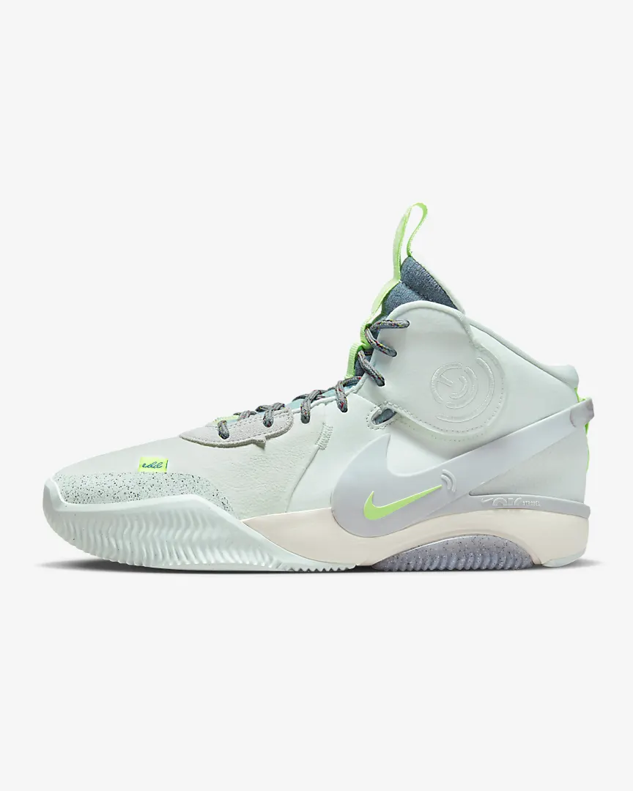
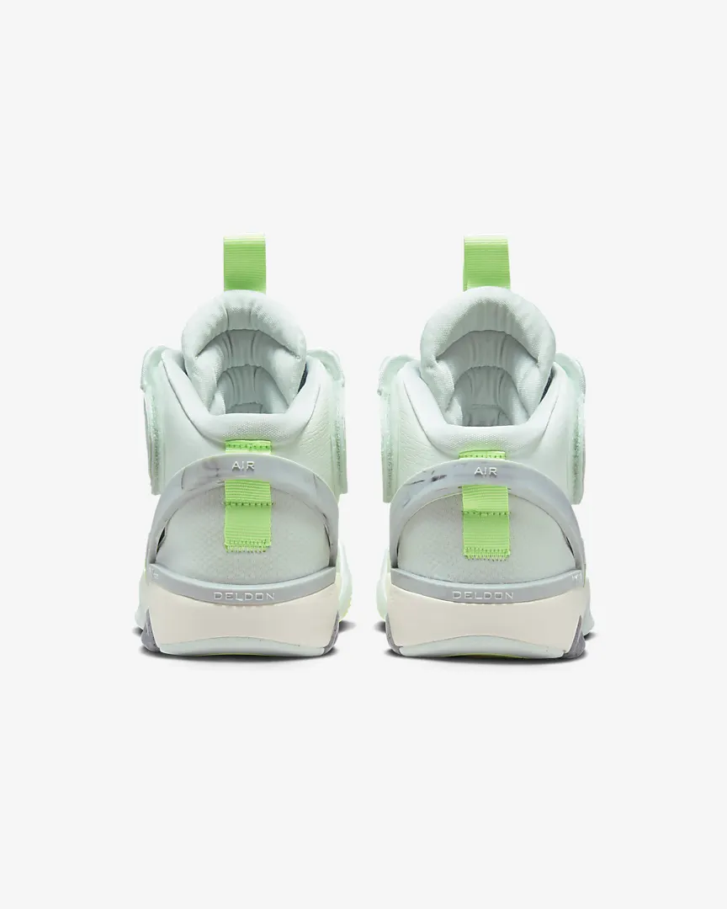

|

|

|
Meet the Nike Air Deldon "Lyme", the new shoe from WNBA star Elena Delle Donne. Channel the best of Elena's versatile game with a basketball shoe designed to keep up with the 2-time MVP. Reflecting her battle with Lyme disease, the lime-green accents represent the drive to continue to fight, even when you feel like you've got nothing left.
Colour Shown: Barely Green/Pale Ivory/Barely Green
Fits small; we recommend ordering half a size up
Foam insole adds cushioning.
Elena's logo is moulded into the exposed foam on the bottom and on the strap.
Pivot, Jab and Cut
The outsole pattern uses contoured lines that bend and deflect in multiple directions to help you gain traction and always feel connected to the court.
|